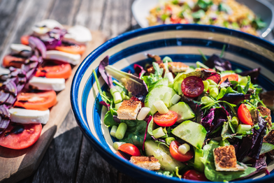

Italian Salad

INGREDIENTS
- Prep Time: 5min - Cook Time: 5min
- 1/2 cup vegetable oil
- 1/4 cup olive oil
- 1/4 cup apple cider vinegar>
- 1 tbsp. red wine vinegar
- 1 clove garlic, minced
- 2 tsp. parmesan cheese, grated
- 1 tsp. granulated sugar
- 1 1/2 tsp. kosher salt
- 1/4 tsp. ground black pepper
- 1/4 tsp. dried oregano
- 1/4 tsp. crushed red pepper flakes
- 1/8 tsp. onion powder (granulated onion)
- 1 head romaine lettuce, torn or broken into bit-size pieces
- 10 grape tomatoes, halved
- 1 cup whole black olives
- 1 red bell pepper, diced
- 4 tbsp. crumbled feta
- 1 cucumber, peeled and diced
Directions:
1. To make the dressing, combine the vegetable oil, olive oil, apple cider vinegar, red wine vinegar, garlic, parmesan, sugar, kosher salt, pepper, oregano, red pepper flakes, and granulate onion in a medium mixing bowl and whisk vigorously to combine. Set aside.
2.Combine the lettuce, tomatoes, olives, bell pepper, feta, and cucumber in a large mixing bowl
3.Drizzle 2-3 tbsp. of the Italian salad dressing over the salad and toss well to evenly coat all the salad.
4.Leftover dressing can be stored in an air-tight container for up to a week in the refrigerator
BACK TO HOME